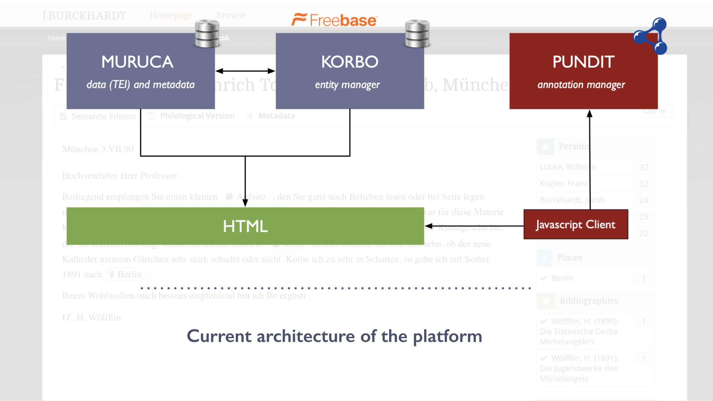
Burckhardtsource was envisioned with a clear differentiation between the attributes of a letter and its content. The attribute would be formalised in a metadata set distinguished from the text they refer to. The encoding of the letter would be carried out in TEI. The architecture of the platform was based on a classical LAMP (Linux Apache MySql PHP) stack composed by a backend module, called Muruca, where both letter and metadata were stored. The backend was linked with an ad-hoc vocabulary management server, called Korbo, which contained records from Freebase, a collaborative knowledge base developed by Metaweb. The role of Freebase was key to the whole infrastructure because it helped disambiguate entities and providing unique URIs. People, places and artworks were added to the Freebase platform and then copied in the local SQL database for easy and quick access. The HTML representation of the TEI would be further annotated using Pundit, a semantic annotation manager which enable the editors to add, throughout a JavaScript client, further statements to the text.
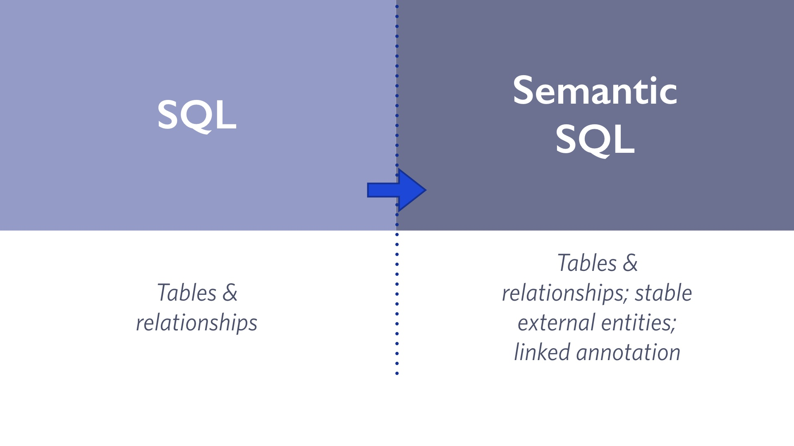
The platform used the stable structure of SQL together with some extra features to normalise the semantics of its elements creating a sort of “Semantic SQL”.
While the original architecture was stable and guaranteed an acceptable workflow, after the demise of Freebase in 2016 following its acquisition by Google, the whole apparatus shattered. Freebase was, in fact, taken offline and the records made available only as a single 250GB RDF (Resource Description Framework) file. The lack of semantic graph technology in the backend, plus the onerous size of the Freebase database, created several issues for the platform. A significant number of propositions encoded in the Freebase database regarding people, places and artworks were not online anymore and, seeing the onerous size of the freebase export, very difficult to retrieve. After some time, it becomes quite clear that it was necessary to migrate to a newer foundation. The first task was to retrieve the data initially entered in freebase and re-import them into a stable and usable structure.
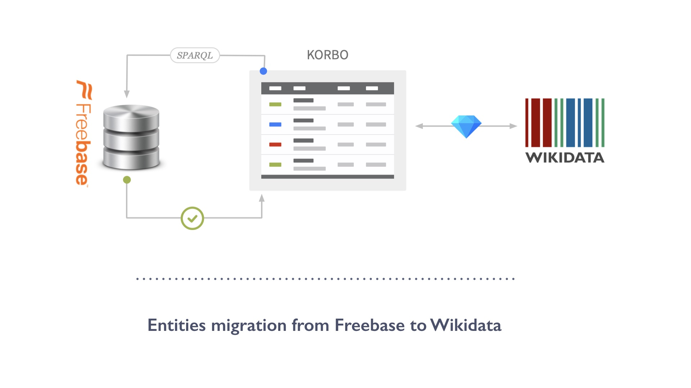
Re-using the identifiers from freebase stored in our platform, we retrieved and extracted from the Freebase dump the RDF triples about the objects described in the project. Due to the size of the export, only the first level of description was extracted, resulting in 4.726.578 RDF triples out of 1.9 billion. After loading them on a triple store (fuseki), they have been reconciled, when possible, with Wikidata, a community created and curated knowledge base and central data repository for the wiki* project. Currently, more than 350 records documenting person described within the burckhardtsource project were imported in Wikidata and many more will be added in the near future.
Wikidata was not the only source taken into account, the records were also linked when possible with the GND (Gemeinsame Normdatei), the Integrated Authority File from the German National Library or Geonames a de facto standard for geographical information.
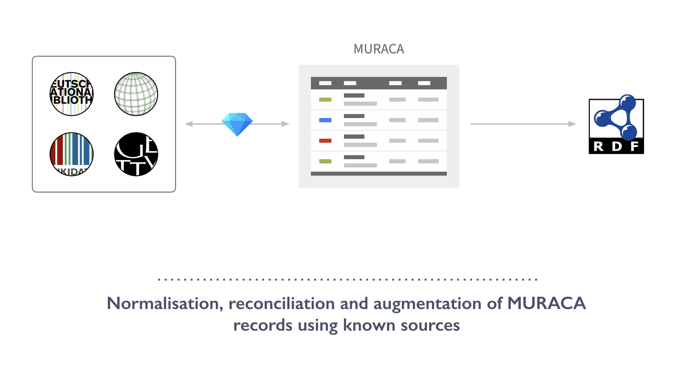
Korbo was not the only part of the initial architecture being restructured. Muraca, the database containing the information about the letters have been also reviewed. The information were normalised, terminological entries were linked with appropriate terms in known thesauri (such as Getty Art and Architecture Thesaurus), and the records were linked with the appropriate equivalent from external sources.
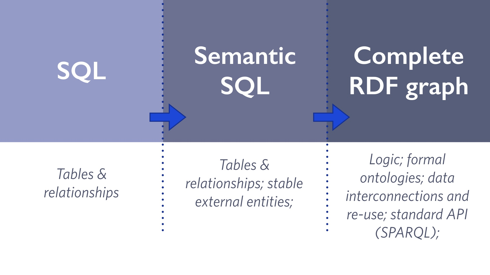
After cleaning, normalising, linking and enriching the data it was necessary to ask if the current system is still advantageous or the current technological scenario is able to offer a more beneficial solution for the problem. In our case, while the work done until now has proven of great benefit, more can be done to interconnect the source to other knowledge sources and similar projects which can benefit from our information, and we can benefit from their. In order to do so, we need to build an integrative approach able to define a framework under which we can share knowledge between each others. The best technological solution for such kind of objective is given by the framework of the Semantic Web.
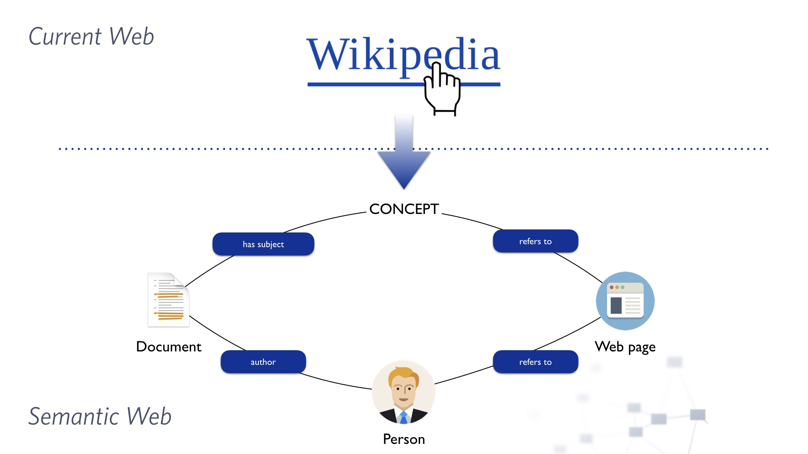
The semantic web, it is an extension of the current Web which use standards for ensuring data sharing throughout common formats and exchange protocol.
While the traditional web infrastructure allows the browsing of a global information space using textual hyperlink within webpages, the semantic web and linked data framework use machine-readable structures where the meaning of the described resource is formally defined, in order to link datasets and propositions together. The result, the Web of Data, is the web of resource described by diverse institutions and authorities which are linked together. The diversity in respect to the original web is that the machine are able to aggregate information on the base of their explicit semantic, avoiding the current linguistic issues (polysemy, homonyms) and providing users with engine able to answer query and not simply provides documents which talk about the subject matter.

The usage of the semantic web framework allow us to use a system able to host and link together knowledge coming from diverse projects, making the project one important node in a network of historical linked resources which can be queried, browsed together. The accumulation of knowledge would allow to overcome the current disciplinary faceting which makes information difficult to be interchanged and linked within the diverse facets of a discipline. The integration of knowledge enable us to answer (and more important, think and ask) new queries and discover novel information.
In order to achieve such goal it is necessary to think and formalise an information model able to integrate various contributions, flexible enough to accomodate the diversity in semantics and structurisation of the information.
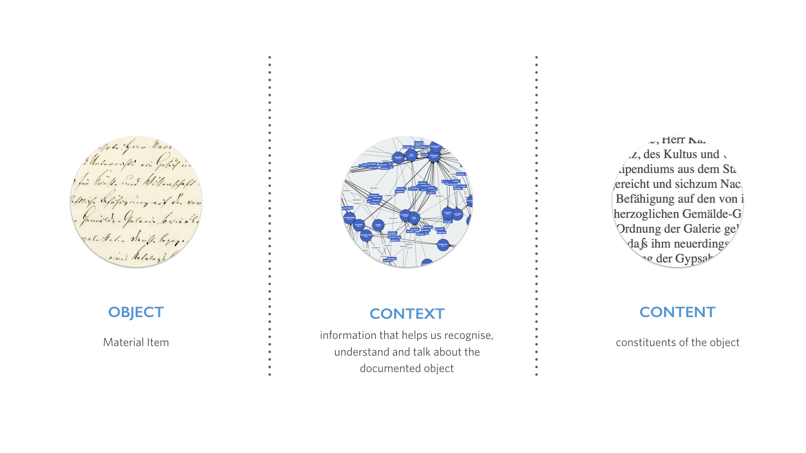
In order to do so, we started establishing the initial conceptual requirements. We defined the project as aimed at the documentation of three different layers: the object, its context and its content. The object layer indicates the item under scrutiny. The context layer refers to that information that helps us recognise, understand and talk about the documented object. The content layer denotes the constituents of the object; in the case of the burckhardtsource project we refer to its textual dimension.
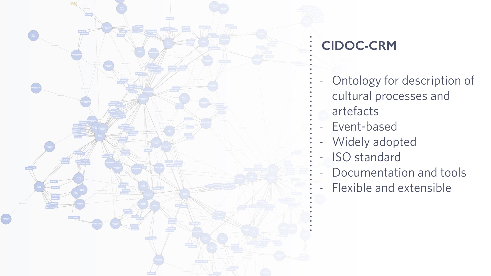
For being functional, these theoretical layers need to be translated into an ontological model that would ensure its applicability on a diverse range of object/situations. We chose CIDOC-CRM as our reference ontology because of its event-based construction as well as its reliability. CIDOC-CRM is an empirically developed and non-prescriptive ontology focused on the cultural heritage domain. Aimed at the documentation of heritage object, CIDOC-CRM records events in relation to objects and agents, organising the information as outcomes of activities of diverse nature. The historical interactions are grounded in time, enabling a flexible definition of the diverse roles assigned to each entity which participate in an event. In order to fully comprehend the interconnections of information between the layers defined before it is essential to discuss them further, analysing and explaining the choices made.
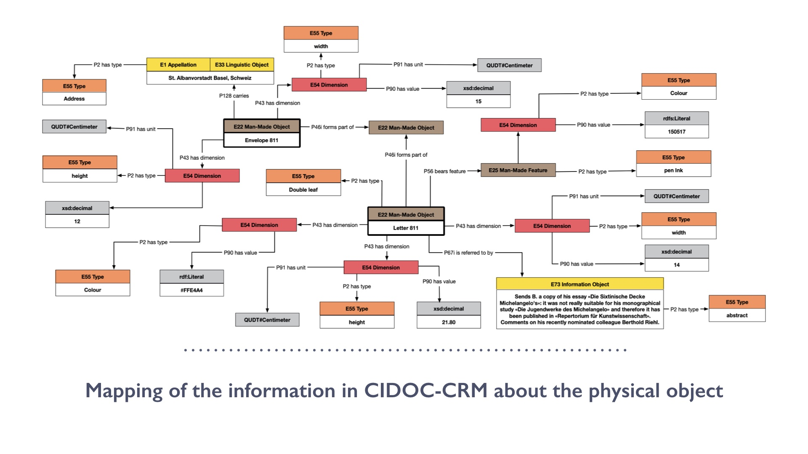
We start from the first and foremost important object of our analysis: a letter. The information sets about the material aspect of the letter are mapped, as they appear in the database of burckhardtsource, using CIDOC-CRM. The letter is not documented as a single item, but together with its envelope. For such reason, we define it as a single object, declared as a blank node, formed by two parts, the envelope and the letter. This modelling allows us to document envelope and the letter as part of the same whole, described as an anonymous resource of which we imply the existence. It would not be correct to define the letter as part of the envelope, nor the opposite, because both exist separately and no one can be said to be part of the other.
The letter is measured and documented with respect to its dimensions (width and height). Further information are present about the colour of the paper, and details about the use of ink (or a more informal pencil) and its colour are also reported. The envelope is also described as thoroughly as the letter, including information about its width, height and colour. We modelled the extent of the letter/envelop, but also the colour of the ink and paper, as dimensions, using the class E54 Dimension from CRM. This class allow the declaration of value, unit and type of dimension. While the value is encoded using a rdfs:Literal (or a more appropriate subclass when needed), we rely on the well-known QUDT (Quantity, Unity, Dimension and Types) ontology for specifying the vocabulary of unit chosen for the reported values.
While the colour of both page and ink is modelled as an instance of the class E54 Dimension, the ink itself is treated as a fiat object, an identifiable feature integral to the object, which has its own characteristics. The class E25 Man-Made Feature translate such construct in CRM.
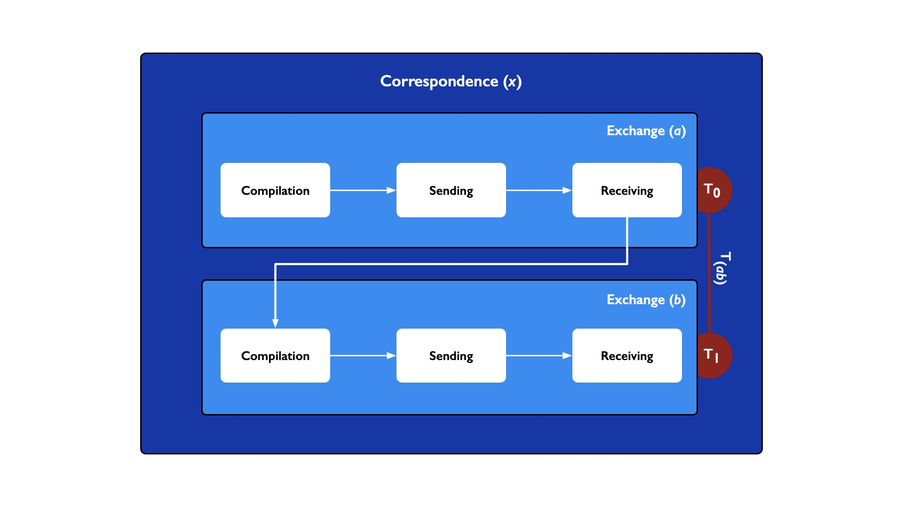
The second layer outline before is the context. Focusing on our case study, the correspondence, we develop a model capable of documenting the diverse units of exchanges in time between two persons.
The chosen solution is to structure the information about a single correspondence as an event-layered process composed by diverse exchanges, themselves subdivided into three different units which identify the compilation, the dispatch and receiving of a letter. In this scenario, a single correspondence denotes the exchange of letters between two persons. Each correspondence is composed by one or more exchanges. A single exchange is a communication act which reflects the action of directing a letter to another person. It is (or can be) composed by diverse single activities comprising the compilation of a letter, its dispatch to an address, and its collection by an agent. Not each of these single units needs to be documented, but the existence of each of them need to be implied.
The layered nature of the model enables us to widen or shorten the amount of information with respect to the correspondence. The information that documents each exchange, for example, can be reduced without affecting the functionality of the model. It is, moreover, envisioned that, if no information is available, the exchange itself could be discarded and only the correspondence event can be described without affecting the integration capabilities of the model.
A considerable benefit of this approach is due by the possibility to further document these diverse discrete events with temporal and spatial information, which can be used to compute the duration and frequency of each exchange as well as of the whole correspondence between two persons
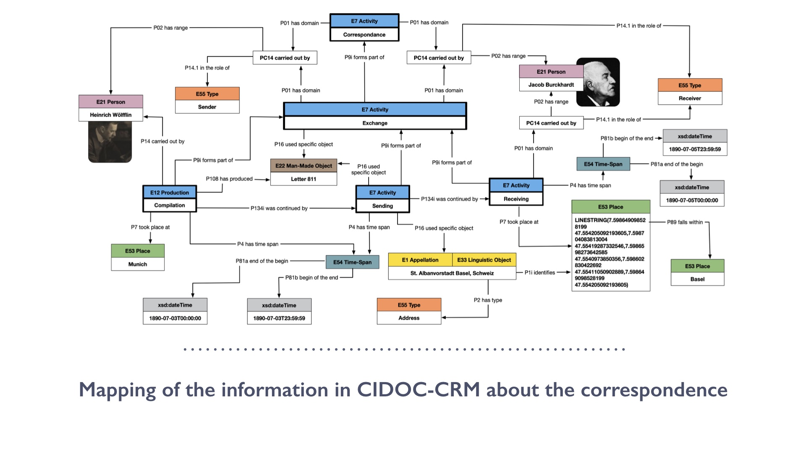
We translate the previous model in semantic propositions encoded using CIDOC-CRM. The mapping document the letter 811, part of the exchange between Heinrich Wölfflin and Jacob Burckhardt. Following the correspondence model, we defined three different activities, “compilation”, “sending” and “receiving”. Each of these activities is linked as protraction of the other using the property “P134 was continued by”. Moreover, each of these activities is declared as part of a bigger activity called “Exchange”. The latter is modelled as part of the whole correspondence between Wölfflin and Burckhardt.
As it is possible to see in the graph, the letter 811 was composed by Wölfflin in Munich, and from there sent to the address “St. Albanvorstadt Basel, Schweiz”, at the time corresponding to Burckhardt’s house. We association the city of Munich to the event “compilation” and the address of Burckhardt house to both the action of sending and receiving the letter. The “sending” event is related to the address through the property “P16 used specific object”.
The relation with the “receiving” event is subtler, because it has been declared that the event itself, the reception of the letter, took place in a specific geometrical place (defined using a WKT literal), which correspond to the address indicated in the “sending” event and was carried out, in the role of receiver, by Burckhardt himself. It has to be noticed that we modelled the receiving address as a representation of a geometrical place, the polygon occupied by the house of Burckhardt at the time. The receiving address, in fact, is to be considered only as a name identifying a specific extent in space, and not as the identifier of the house of Burckhardt, which is not a stable entity but four-dimensional one (it changes over time). The cultural historian, in fact, resided in St. Albanvorstadt (Basel) until 1892, the year that he moved to Aeschengraben 6 (Basel). For such reason the address itself is not identified as Burckhardt’s house, but as a name given to the extent in space corresponding to the house in St. Albanvorstadt 64 in Basel. Another important characteristic of CRM used by the model is the precise definition of the roles of each actor in an event. Relying on the diverse events, we defined the role of receiver, associated in this instance with Burckhardt, as well as the sender, in this example performed by Wölfflin.
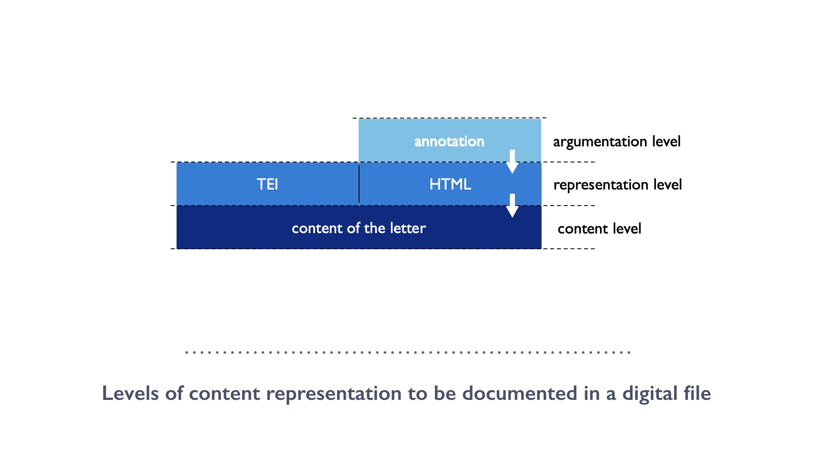
The modelling of the contextual information is vital to understand an artefact, but in the case of a communication object, such as a letter, we need to explore another critical level of description: the content. The creation of a digital scholarly edition entails the creation of one or more textual representation which can be encoded and use very differently. We usually work within three diverse levels: the content, its representation and an argumentation over it. While the content denotes the original datum in the object, each representation level in a digital edition is an interpretation of that content in a specific language/encoding. In the case of burckhardtsource, the content is represented as both HTML and TEI. While many projects would stop here, others define a further level, the argumentation. With the latter, we indicate a set of assertions which analyse, define or make a critique over one representation. In order to ground the argumentation with respect to the content (through a representation), it is essential to model the relationship between these three levels.
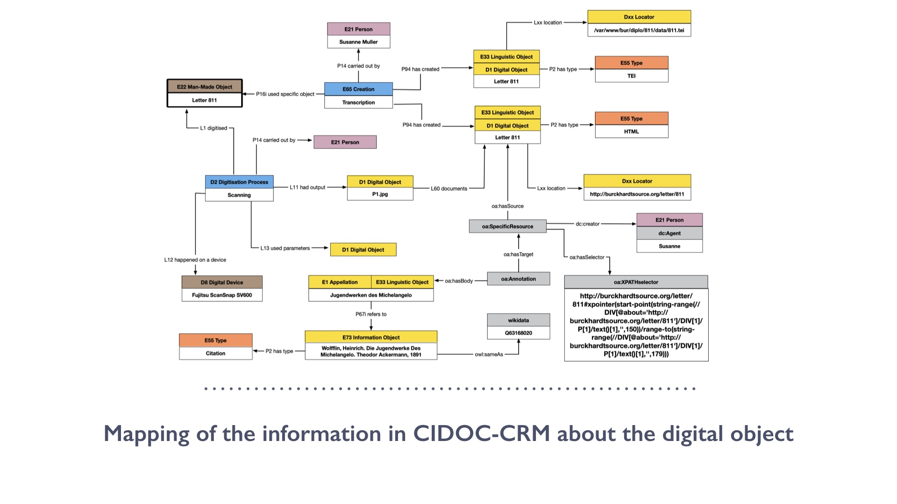
We started our mapping describing two main processes: the transcription and a digitisation of the letter 811 previously documented. The transcription is defined as an E65 Creation event, carried out by a scholar, and resulting in the creation of two digital representations: one in HTML and the other one in TEI. Both are documented in respect to their location using a class (Locator) and a property (location) not yet formalised in the official version of CRMdig, but currently under revision.
As underlined by the previous slide the argumentation level uses the digital representation in order to encode assertions over the original physical object. Following this schema, we use the HTML representation as the target of our propositions, encoding them as annotation using the Web Annotation data model. This model provides a simple framework for expressing the relationship between a set of three connected resources: an annotation, a body and a target. The data model is flexible enough to accommodate diverse purposes and, for such reason, it defines the identity of the annotation as an aboutness statement in relation to a target, which is the resource (or part of) subjected to the annotation. The body and the target are related by the class annotation.
The Web Annotation model is quite flexible and an Annotation can be linked to instance of other ontologies. Following this logic, we were able to define the link between an Annotation and the CRM E33 Linguistic Object of the specific entity types it refers to. In this case of burckhardtsource, the annotations can be linked to four chosen entity types (bibliographical resources, persons, places, and artworks), specifying which part of the text refers to those entities, and making the whole textual content browsable.
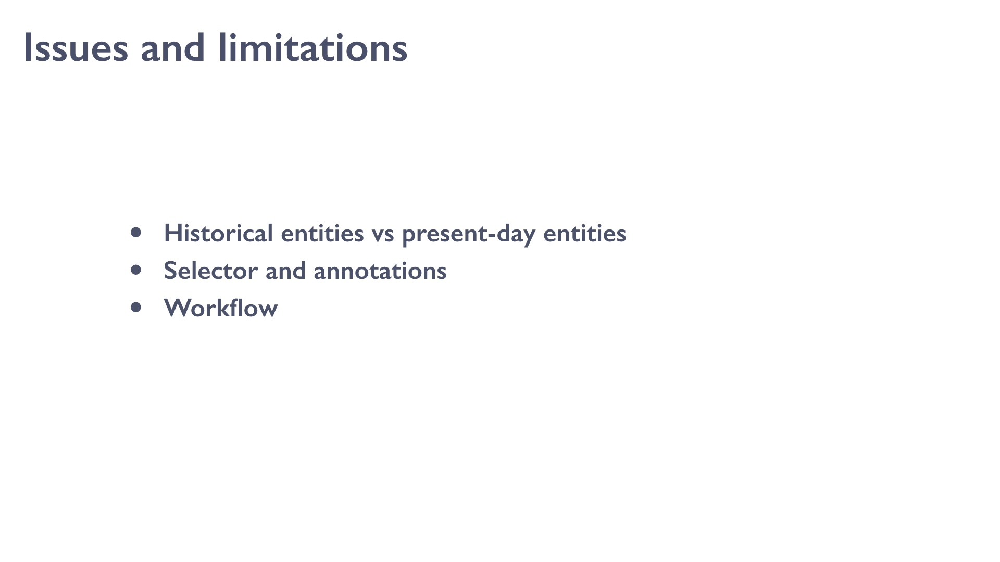
Some issues were encountered during this work, and it is important to underline them. The very first is the issue of Historical entities vs present-day entities. The letters refer to cities which do not exist anymore because now aggregated into one, or name which does not identify the city anymore. Königsberg is the perfect example. Some letters refer to the city within the Kingdom of Prussia, which is now recognised as Kaliningrad and part of Russia. Such a big city has an entry in Wikidata which we can re-use, however, and the question remains open, should we point at the current geographical location or to the political entity the letters refers to?
Another important one is technical and it is about the selector of the annotation. We use XPath to identify the position of a portion of the text in the document, but if this position changes slightly over time, it will point to a diverse textual segment. It is necessary to implement alternative to this methods.
The third and probably the most difficult to tackle is the lack of a complete RDF-based workflow easy to implement. A large project still needs to spend a significant amount of resources for the development of ad-hoc solution for recording semantic statements and save them in a graph. Many projects cannot face such type of challenge, both in term of people and resource, therefore standard platform able to offer such type of service should be developed. While solutions such as Researchspace appears to arrive, in a stable form, now on the market, they still do require a high level of knowledge, capacity and resource, which not everyone can sustain over time.